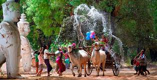

We have very interesting & exiciting events and festivals in each month in our country. There are some famous events and festivals below.
January
Witness these three huge celebrations in Kachin, Sagaing and Bagan;
villagers performing the Manaw dance during Kachin Manaw Festival, locals celebrating
the rare Naga New Year in Sagaing, and the Ananda Pagoda Festival in Bagan as villagers
bring bullock carts to the festival.

February
The Mahamuni Pagoda Festival is largely celebrated by the people of Mandalay
during this month. Locals gather in front of the Maha Muni Buddha image to pray and pay their respects.
In February, you will also witness Kogyikyaw Spirit Festival, Htamane Festival, Kyaik Khauk Pagoda
Festival, and Mann Shwe Settaw Pagoda Festival.
March
Witness these three huge celebrations in Kachin, Sagaing and Bagan;
villagers performing the Manaw dance during Kachin Manaw Festival, locals celebrating
the rare Naga New Year in Sagaing, and the Ananda Pagoda Festival in Bagan as villagers
bring bullock carts to the festival.

April
You have to visit Myanmar in April in order to participate in the country's biggest
festivals; the Water Festival and Myanmar New Year. For 3 days, people all over the country celebrate
this water festival by splashing water on each other to cleanse one's body and soul of evil and
negativity. There is also Shwe Maw Daw Pagoda Festival and Salon Festival that should not be missed.
May
If you are visiting Myanmar in May, do witness the locals participating in the Bodhi
Tree Watering Festival that celebrates the sacred Bodhi trees planted on religious sites throughout Myanmar.
It is said that Lord Buddha gained enlightenment under a Bodhi tree, prompting devotees to plant these trees
all over Myanmar by obtaining saplings from the original Bodhi tree.
June
Locals celebrate Pakokku Thiho Shin Pagoda Festival at Magway by bringing in bull
carts and selling all kinds of goods and produce. The money earned will be donated to the pagoda and monks
at the temples. Some generous souls will even buy rice and nutritious food for the monks. You can purchase
items from the vendors to experience the authentic local life as well.
July
Waso Full Moon Festival is celebrated in July, where monks hold a retreat to teach
sermons and meditate. Buddhists all over the country donate robes to the monks, making this festival highly
respected by the Myanmarese. After that, the largest traditional sporting event in Myanmar is celebrated
for 48 days, known as Waso Chin-Lone Festival or cane ball. If you happen to be in Myanmar in July,
we recommend you to join the locals in watching the Waso Chin-Lone Festival in Mandalay. This non-contact
sport showcases players' acrobatic moves and skill in keeping the cane ball from touching the ground as
they pass it to one another.
August
n August, the Myanmarese celebrate Yadana Gu Spirit Festival, an occasion for
spirit-worshipping that involves mediums dancing and getting possessed by Nat, or spirits. In this festival,
locals also celebrate the Goddess of Popa, or more commonly known as the protector of women.
Taung Pyone Spirit Festival celebrates two souls of brothers who were believed to be executed
at the village for failing to complete the Taung Pyone pagoda. People offer food to the spirits to keep
them happy in exchange for protection and blessings.

September
Inle Lake is usually crowded in September. Thousands of locals and visitors flock
to Inle Lake to witness the highly anticipated Phaung Daw Oo Pagoda Festival that features enshrined
Buddha images. Offer donations to the pagodas and watch locals sing and dance to folk songs, and watch
the thrilling one-legged boat race participated by male locals. Manuha Pagoda Festival is also
celebrated in September, with locals parading the streets with offerings and paper figurines of
Lord Buddha's reincarnations.
October
To commemorate the moment that the Buddha made his descent back to earth,
people in Myanmar decorate pagodas and their homes with electric lights, candles, and lanterns.
Fireworks also feature during the festivities.
Musical plays called zat pwes, movies, and open-air stage shows are also enjoyed by residents and visitors.
Tourists in Myanmar for the Buddhist festival of light can sample traditional dishes on offer at
the many stalls set up in the street. There are also shops selling useful items for the home and toys.

November
The Hot Air Balloon Festival in Taungyi is among the festival highlights in November.
You will see beautiful balloons of all shapes and sizes floating in the sky day and night.
During Tazaung Daing Light Festival, you will get to see many lights, candles and fireworks being lit by
the locals. In November, you will also witness the All Night Robe Weaving Contest, Shwesandaw (Pyay)
Pagoda Festival, Phowintaung Pagoda Festival, and Shwezigon Pagoda Festival.
December
Magway Mya Thalon Pagoda Festival is celebrated by the people of Magway to welcome
the New Year. 9,000 oil lamps are offered to the pagoda during this festival, which shows the pagoda
brightly lit at night. The locals also donate food to the monks who have prayed and conducted religious
rituals. Kyaikhtiyo Pagoda Festival celebrates the unique pagoda that is perched on top of a round granite
boulder. Lastly, the Mae Lamu Pagoda Festival is one of the most famous temple festivals in Yangon.
Monks in the country recite prayers for 24 hours during the day and dramas and music shows are also
played during this festival to entertain the locals.